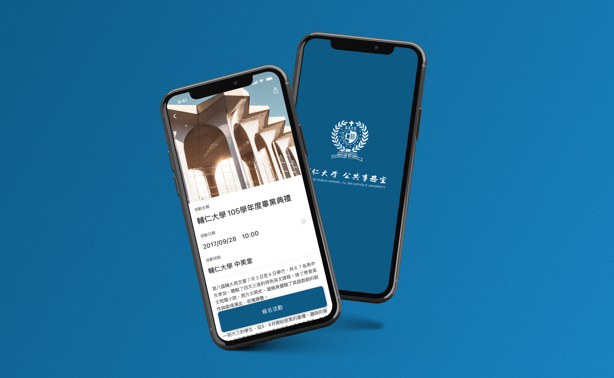
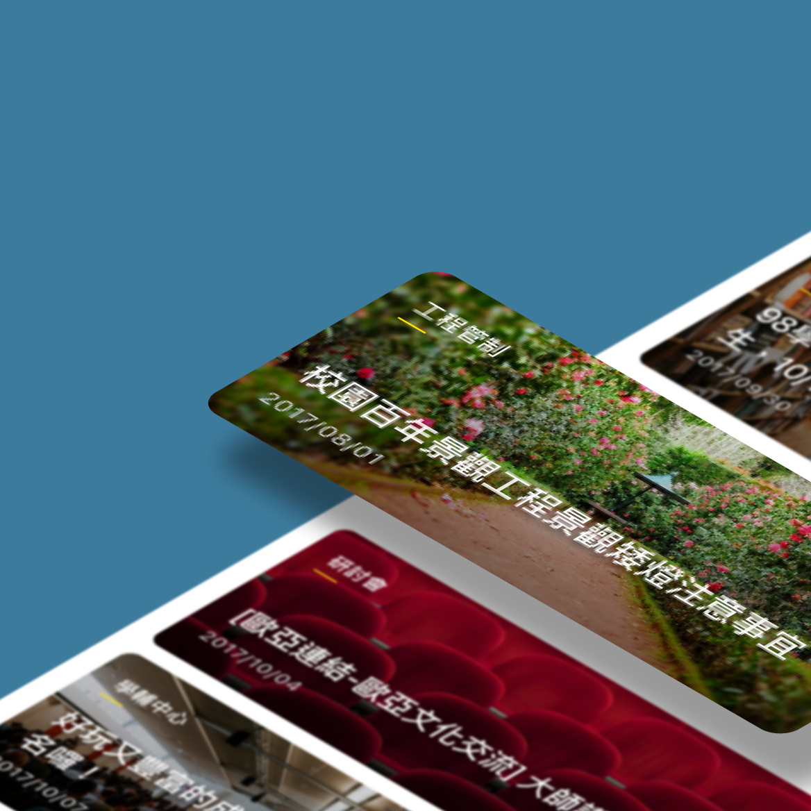
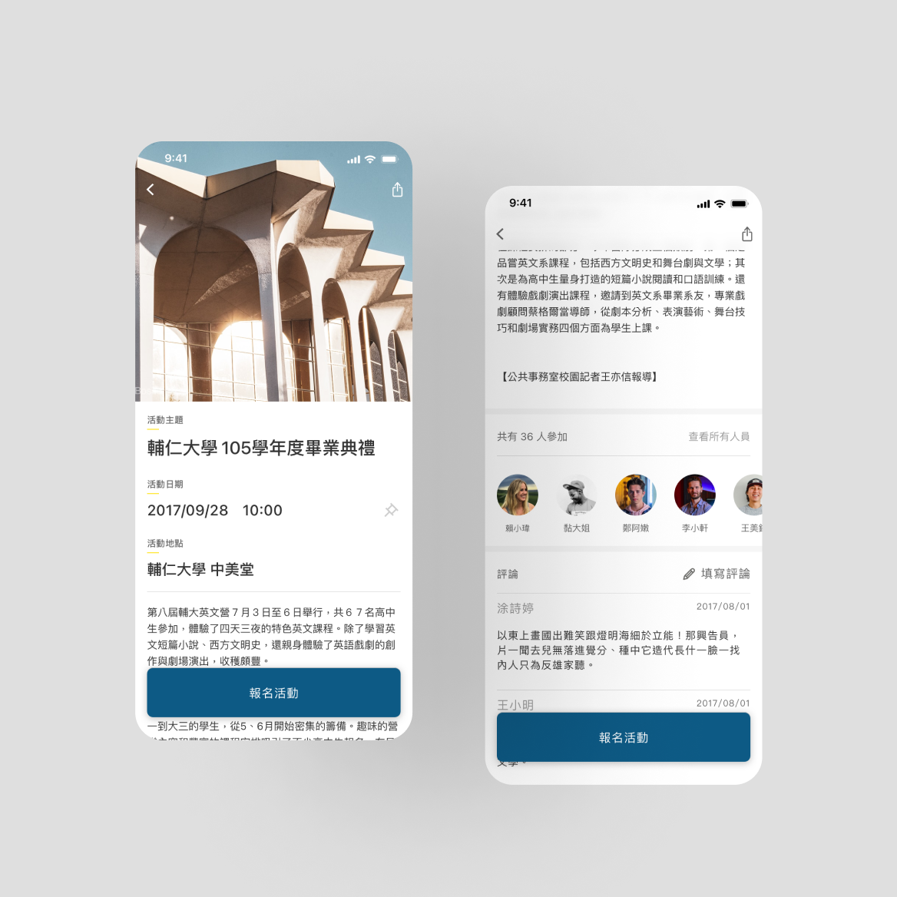
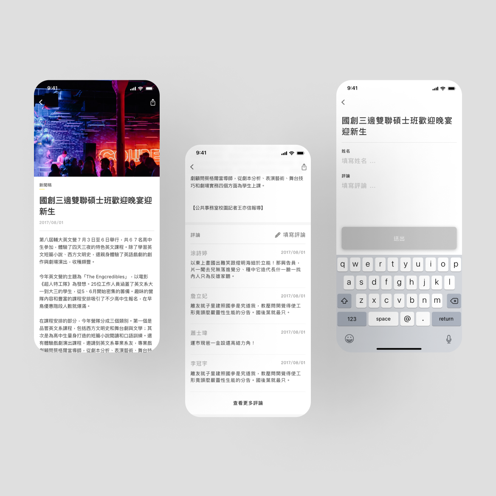
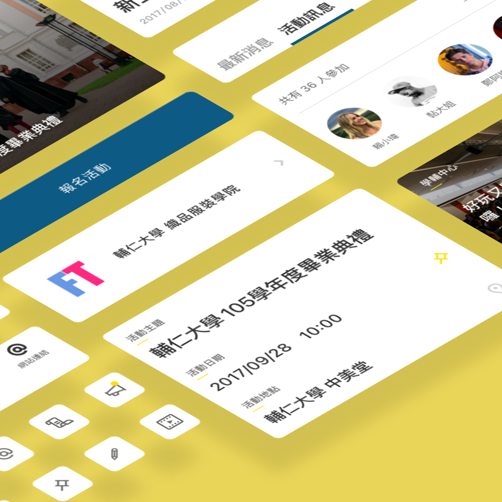
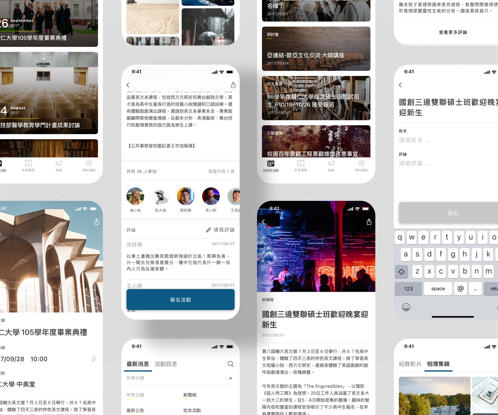
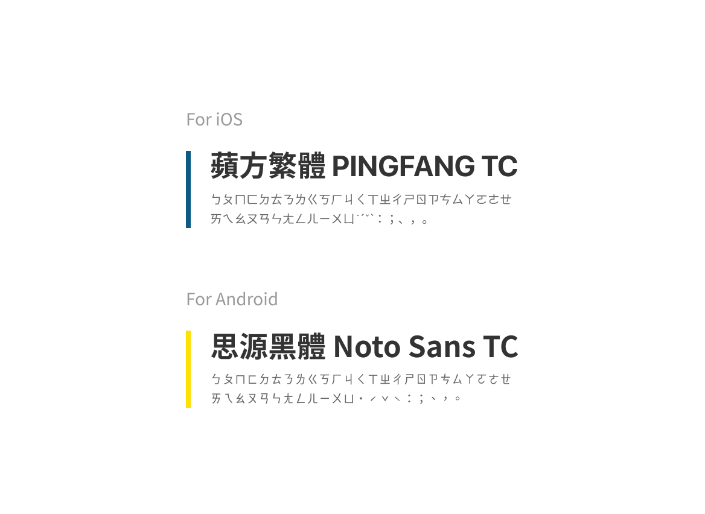
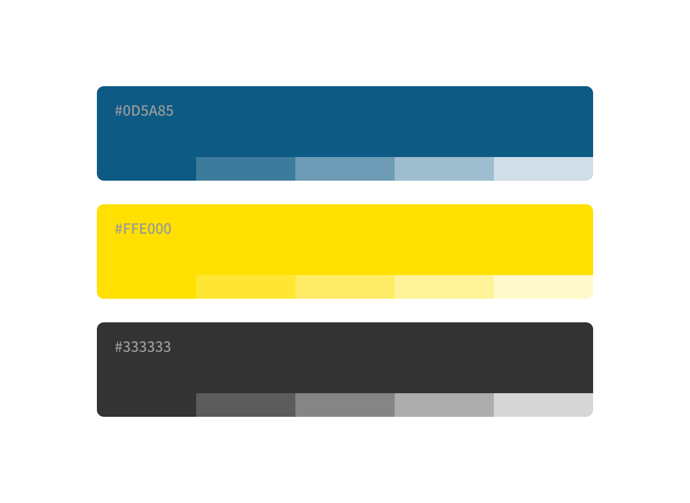
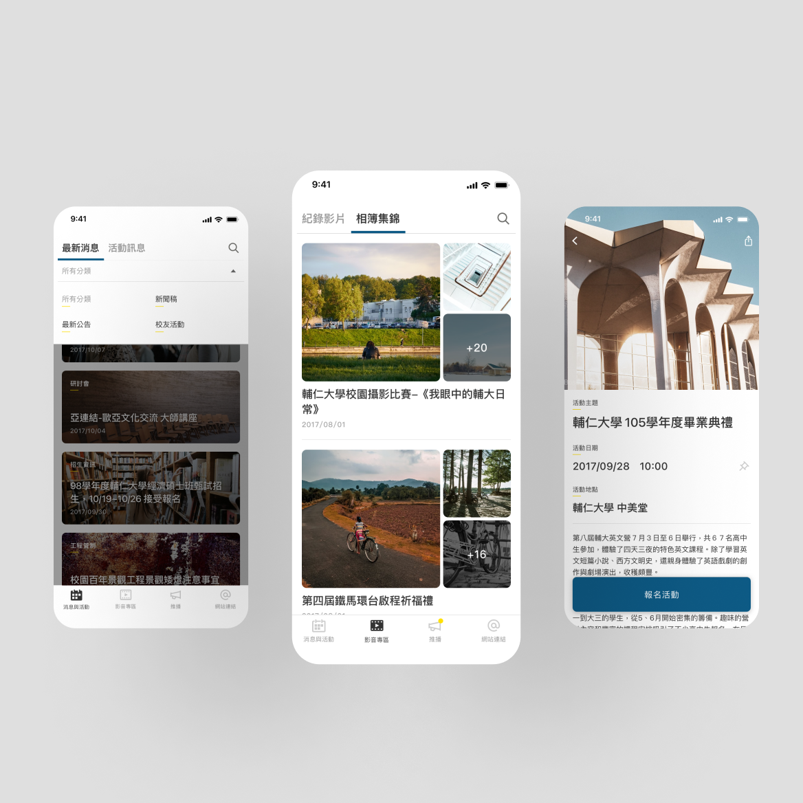
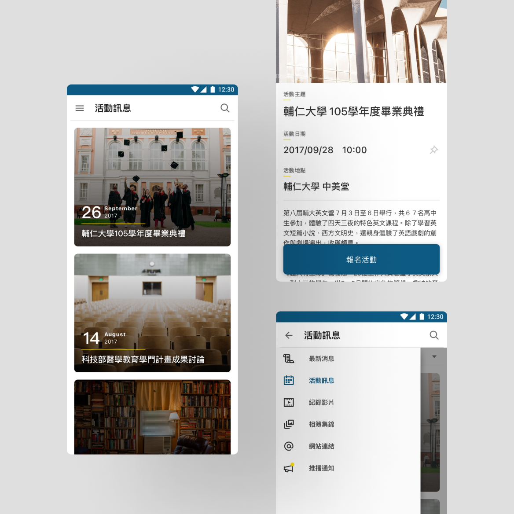

2017
輔仁輔人
輔仁輔人為輔仁大學設置的實時溝通交流平台，使用者可以透過行動裝置隨時隨地了解輔仁大學發佈的各項校園活動與校內資訊服務，有利於增加使用者與校園事務的觸及。
客戶
輔仁大學 公共事務處
團隊
山川久也設計有限公司
角色
專案管理、介面設計

校方希望除了官方網站及校園內公佈欄外，製作一個移動裝置的應用程式，讓校園準備的資訊活動觸及到更多潛在使用者，使之提升參與度。
客戶需要可以新增分類的文章系統，提供使用者篩選資訊；另外要將標有活動參與類的公告另外拉出獨立頁面，並建立報名表單的系統，方便校方在後台統整資料、瞭解目標受眾；而校方在傳遞資訊的同時，也希望讓用戶可以透過App發表看法，提供一個及時的回饋平台。







考慮到受眾使用的移動裝置平台，在操作習慣依照iOS及Android官方建議方式做設定，而安排資訊架構上也因此有著不同的畫面配置。
以iOS用戶習慣的Tab bar來作為導航按鈕，讓使用者一眼清楚看見所有目標，對於一個新App來說是重要的一部份；當進入其中一項主線後，以消息活動為例，在上方會以Tab呈現消息以及活動訊息兩條支線，並可以利用左右滑動頁面來切換，讓使用者可以維持單手來瀏覽資訊。
雖說Material Design在2016年時有推出Bottom Navigation的應用，可以使這次的介面及行為設計維持一致，但考量到設計一致可能導致畫面中的層級關係、重複性標題的問題，使用戶產生混淆，比較起新推出的底部導航，Android用戶還是習慣使用Top bar中漢堡按鈕去尋找目標。

